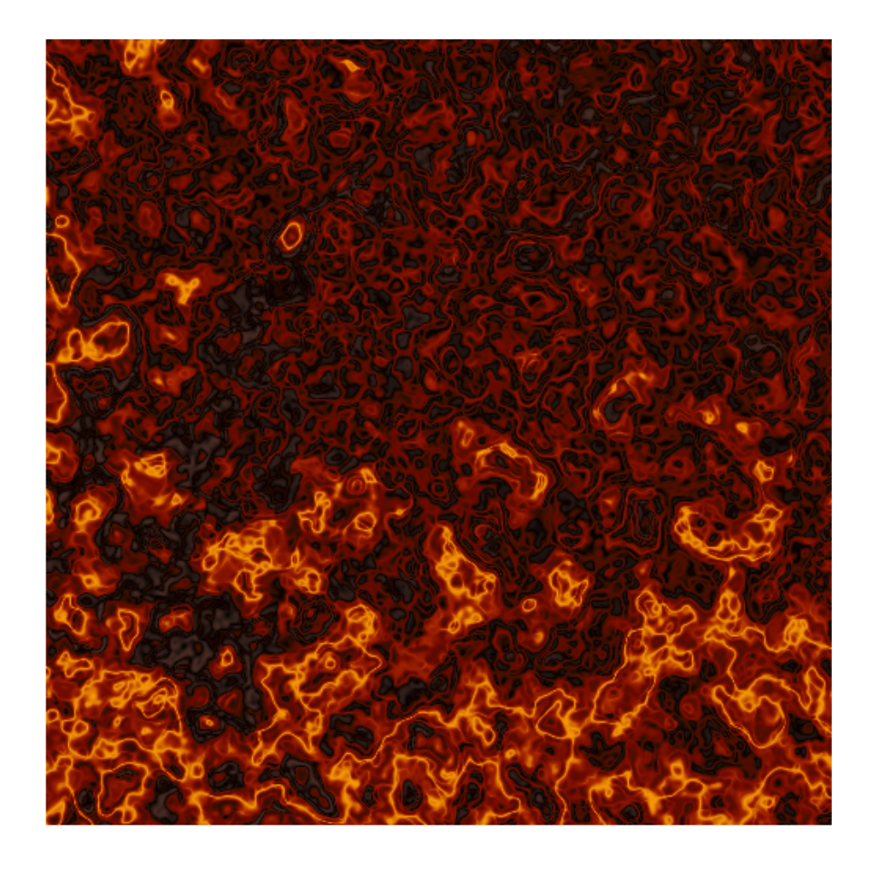

This function draws Chladni figures on a canvas. Named after Ernst Chladni, an 18th century physicist who first discovered them, Chladni figures are patterns that arise from the vibrations of a two-dimensional plate, typically covered with a thin layer of sand or powder. The Chladni figures are created by varying the frequency of vibration applied to the plate. In this implementation, the grid underneath the plate can be transformed using a domain warping technique. The basic idea behind domain warping is to apply a series of transformations to the input grid to create a more complex and interesting output.
canvas_chladni(
colors,
waves = 5,
warp = 0,
resolution = 500,
angles = NULL,
distances = NULL,
flatten = FALSE
)a string or character vector specifying the color(s) used for the artwork.
a character specifying the number of randomly sampled waves, or an integer vector of waves to be summed.
a numeric value specifying the maximum warping distance
for each point. If warp = 0 (the default), no warping is performed.
resolution of the artwork in pixels per row/column. Increasing the resolution increases the quality of the artwork but also increases the computation time exponentially.
optional, a resolution x resolution matrix containing the
angles for the warp, or a character indicating the type of noise to use
(svm, knn, rf, perlin, cubic,
simplex, or worley). If NULL (the default), the noise
type is chosen randomly.
optional, a resolution x resolution matrix containing the
distances for the warp, or a character indicating the type of noise to use
(svm, knn, rf, perlin, cubic,
simplex, or worley). If NULL (the default), the noise
type is chosen randomly.
logical, should colors be flattened after being assigned to a point.
A ggplot object containing the artwork.
colorPalette
# \donttest{
set.seed(2)
# Simple example
canvas_chladni(colors = colorPalette("origami"))
# Advanced example
canvas_chladni(
colors = colorPalette("lava"),
waves = c(1, 2, 3, 9),
warp = 1
)

# }